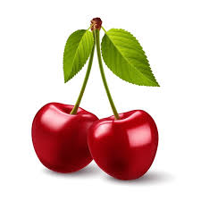

Fruits and Their Descriptions
- Apple
- A sweet, edible fruit produced by an apple tree.
- Banana
- A long, curved fruit with a yellow skin and soft, sweet flesh.
- Cherry

- A small, round fruit that is typically bright or dark red.
Stationery Items and Their Descriptions
- Pen
- A writing instrument that uses ink to leave a mark on paper or other surfaces.
- Pencil
- A tool for writing or drawing, typically made of wood and containing a graphite core.
- Notebook
- A bound or spiral set of lined or blank pages used for taking notes or writing.
- Eraser
- A small rubber tool used to remove pencil marks from paper.
- Ruler
- A straight, edged tool, usually marked in centimeters or inches, used to measure or draw straight lines.
- Highlighter
- A pen with translucent, bright-colored ink used to emphasize text by making it stand out.
- Stapler
- A device used to fasten sheets of paper together by driving metal staples through them.
- Scissors
- A tool with two pivoting blades used to cut paper, cardboard, or other thin materials.
- Paper Clip
- A small, bent piece of metal or plastic used to hold sheets of paper together.
- Sticky Notes
- Small pieces of paper with adhesive on the back, used for temporarily attaching notes to documents or surfaces.